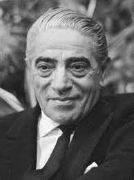

Aristotle Onassis
1906 - 1975
One of the richest people in 20th century
Aristotle Socrates Onassis (Greek: Αριστοτέλης Ωνάσης, Aristotelis Onasis; 20 January 1906 – 15 March 1975),[1] commonly called Ari or Aristo Onassis, was a Greek-Argentine shipping magnate, who amassed the world's largest privately owned shipping fleet and was one of the world's richest and most famous men.

The most well-known potrait of Onassis.
The following list is a time line of Onassis Life
- 1906 - born in Karataş, Smyrna, Ottoman Empire.
- 1922 - He left from Smyrna during the great fire of Smyrna in 1922.
- 1932 - He went to Buenos Aires, Argentina and start working as a telephone operator.
- 1929 - He relocated to New York and started his shipping businesses.
- 1946 - Onassis married Athina Livanos, daughter of shipping magnate Stavros G. Livanos and Arietta Zafrikakis, on 28 December 1946. The couple had become largely separated by the mid-1950s.
- 1950-1956 - Onassis had success whaling off the Peruvian coast.
- 1953 - In Monaco he started to purchase the shares of Monaco's SMB using the tax haven of Panama and finally take the control of SBM.
- 1954 - Cancelation of the agreement between the Saudi government and Aristotle Onassis to transport Saudi oil on his tankers and "in any case, to make the agreement ineffective".
- 1956 - Aristotle Onassis signed a contract granting him the operational rights to the Greek air transport industry. Olympic Airways was founded.
- 1957 - Onassis and opera prima donna Maria Callas embarked on an affair despite the fact that they were both married.
- 1966 - Rainer of Monaco approved a plan to create 600.000 new shares in SBM reducing Onassis's stake to under a third.
- 1967 - Onassis court until he left Monaco.
- 1968 - Onassis announced the launch of Project Omega, a $400 million investment program that aimed to build considerable industrial infrastructure in Greece including an oil refinery and aluminum smelter.
- 1968 - Onassis ended his relationship with Callas to marry Jacqueline Kennedy, widow of U.S. President John F. Kennedy.
- 1975 - Onassis died at age 69 on 15 March 1975 at the American Hospital of Paris in Neuilly-sur-Seine, France, of respiratory failure, a complication of the myasthenia gravis from which he had been suffering during the last years of his life.
Read more about Aristotle Onassis on wikipedia
Writtern and coded byGeorge Georgiou.